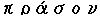

Vert, (fr. sinople): green; absurdly called Venus by those who adopt planets, and Emerald by those who adopt the name precious stones instead of the true name of the tincture. It is expressed in engravings by line in bend. The French are said to have called it Sinople, from a town in the Levant(probably Sinope in Asia Minor) from which were brought the best materials for dyeing green, or silks and stuffs of a brilliant green colour, but the term does not occur before the fifteenth century. In the ancient rolls vert seems to be used occasionally(e.g. in the Roll of Carlaverock spelt verde). The term prasin has also been fancifully used, from the Greek , a leek.